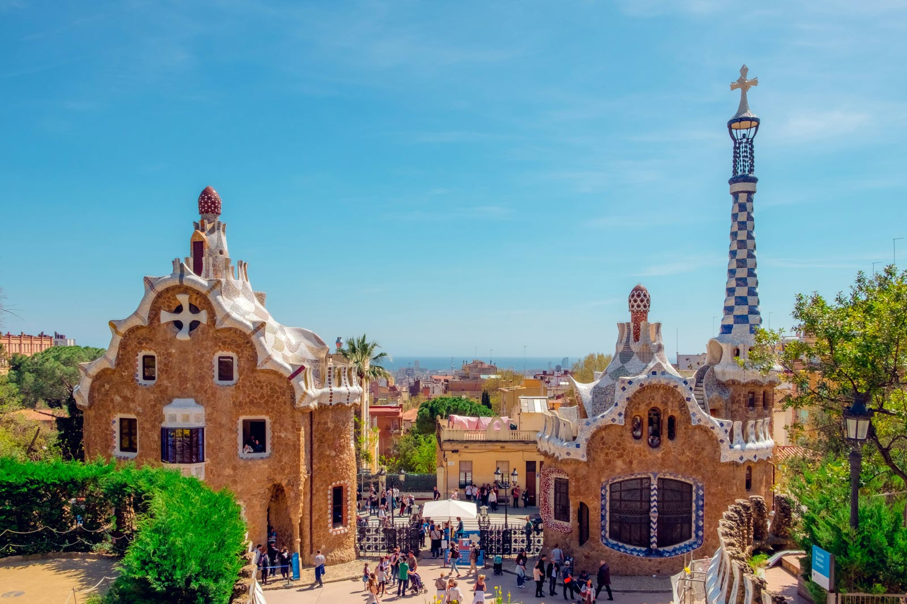
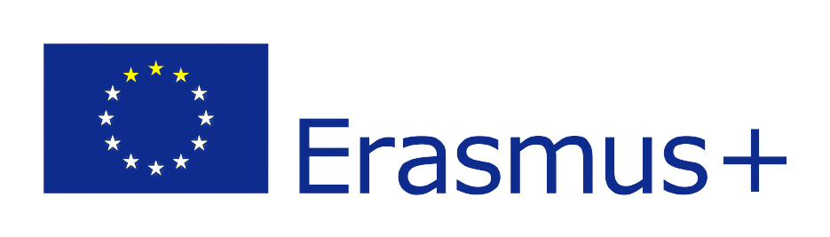
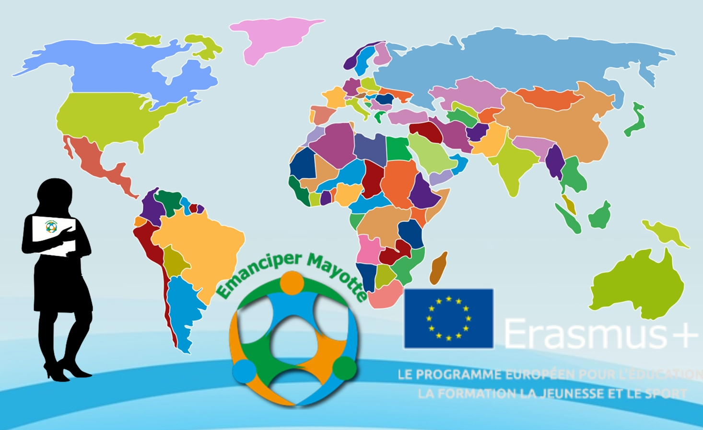
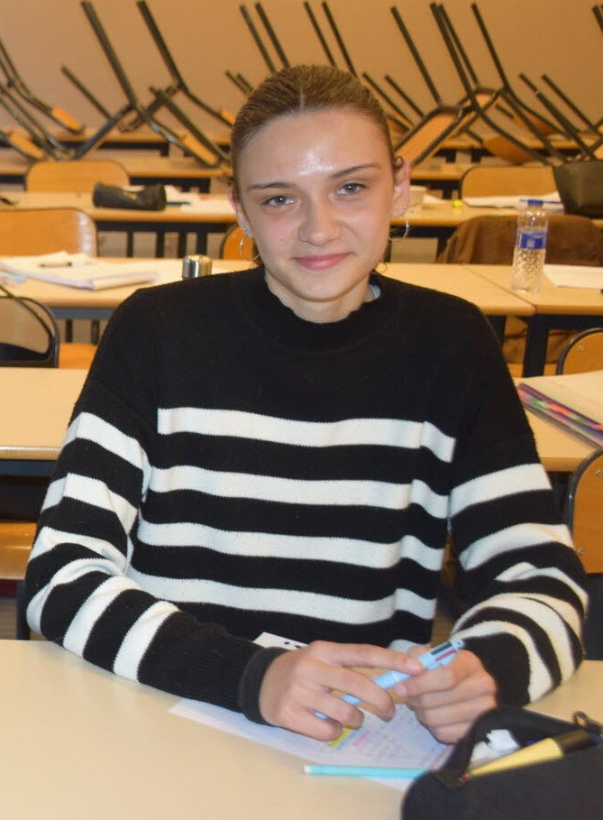
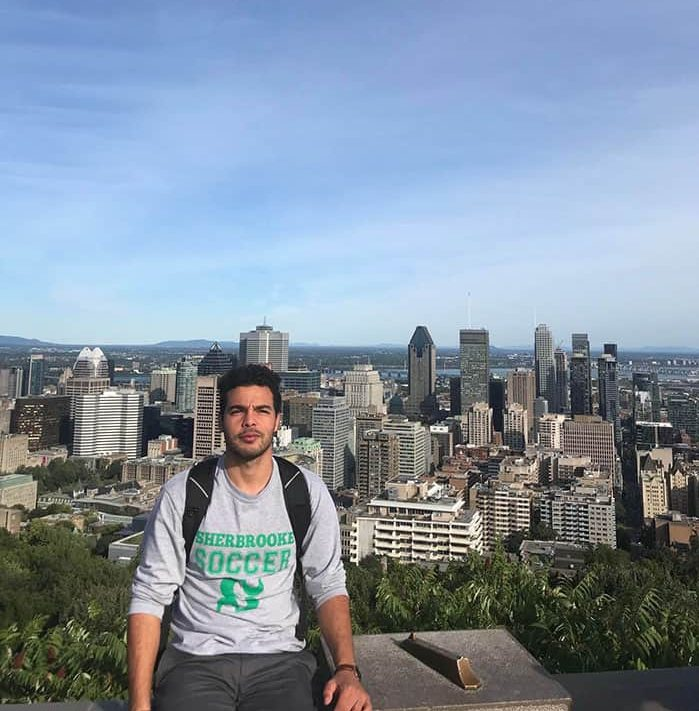

Laura, semestre en Italie
"Partir en semestre d'études à l'étranger a été la meilleure décision de mes études. C'est une expérience enrichissante qui m'a permis de grandir personnellement et professionnellement."
À partir de la 2ᵉ année, tous les étudiants de l'IUT Nord Franche-Comté peuvent envisager un ou deux semestres à l’étranger dans le cadre de leur BUT. L’établissement propose un accompagnement complet pour préparer le départ et réussir sa mobilité.
La mobilité internationale est accessible à tous les étudiants de l'IUT NFC souhaitant enrichir leur parcours académique. Les critères d'éligibilité sont les suivants :
Il est recommandé de se renseigner auprès du responsable des relations internationales de votre département dès la première année pour bien préparer votre projet.
L'IUT Nord Franche-Comté entretient des partenariats avec de nombreuses institutions à travers le monde. Voici les principales destinations :
Chaque destination offre des avantages uniques : immersion linguistique, découverte d'approches pédagogiques différentes, enrichissement culturel et développement de compétences interculturelles très appréciées par les employeurs.
Partir étudier à l'étranger représente un investissement, mais de nombreuses aides financières existent pour vous accompagner dans votre projet. Ne laissez pas les aspects financiers vous freiner !
Le montant des aides varie selon la destination et votre situation. Un accompagnement personnalisé est proposé par le service des relations internationales pour constituer votre dossier de demande de bourses. N'hésitez pas à les contacter dès que votre projet se concrétise.
À partir de la 2ᵉ année, tous les étudiants de l'IUT NFC peuvent envisager 1 à 2 semestres à l'étranger, selon les accords de leur département.
Découvrez les destinations populaires pour votre semestre d'études :



Découvrez les expériences authentiques de nos étudiants partis en mobilité internationale. Leurs récits témoignent de l'impact positif d'un semestre à l'étranger sur leur parcours académique et personnel.
"Partir en semestre d'études à l'étranger a été la meilleure décision de mes études. C'est une expérience enrichissante qui m'a permis de grandir personnellement et professionnellement."
"Avant de partir, j'avais peur de m'adapter. Finalement, cette expérience m'a permis de rencontrer des étudiants du monde entier et de progresser en espagnol."

"C'était une chance incroyable. Je me suis senti soutenu par l'IUT et j'ai pu profiter de bourses pour financer mon séjour."

Retrouvez plus de témoignages sur notre magazine dédié à la mobilité internationale ci-dessous.
Cliquez sur la couverture pour feuilleter le magazine

Cliquez pour ouvrir

Découvrez les témoignages en vidéo de nos étudiants partis en mobilité internationale.
Interview avec M. Alain Lamboux-Durand sur la mobilité internationale
Témoignage de Camille NORRITO - Mobilité au Canada
Une mobilité internationale réussie nécessite une préparation minutieuse. Voici les étapes clés pour bien organiser votre séjour à l'étranger :
Selon votre destination, plusieurs documents peuvent être nécessaires :
Pour profiter pleinement de votre expérience à l'étranger :
Besoin d'aide ? Le service des relations internationales de l'IUT NFC vous accompagne à chaque étape de votre projet. N'hésitez pas à les contacter pour toute question.